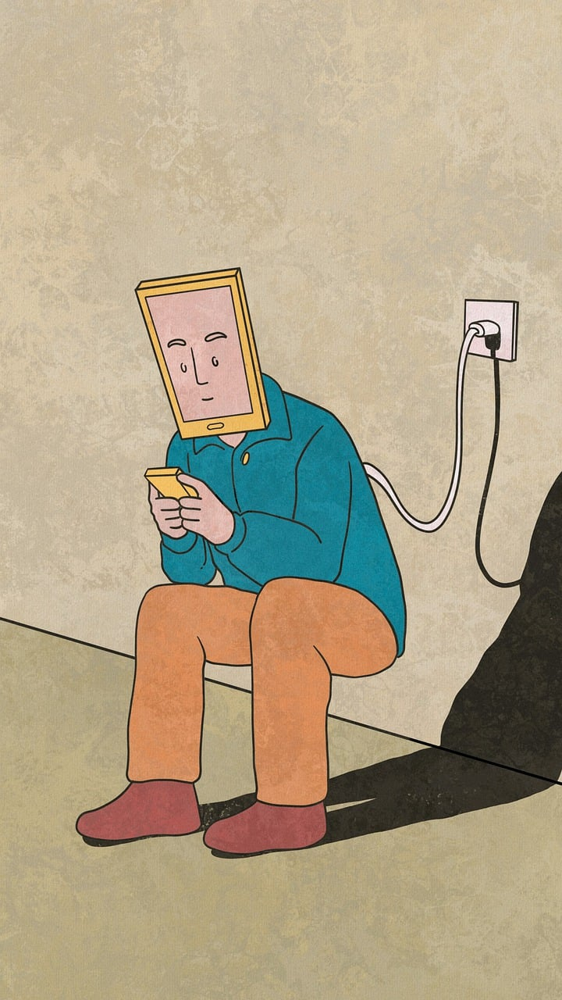
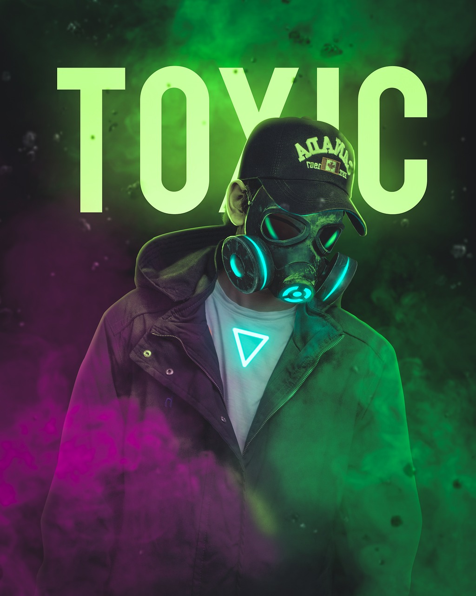
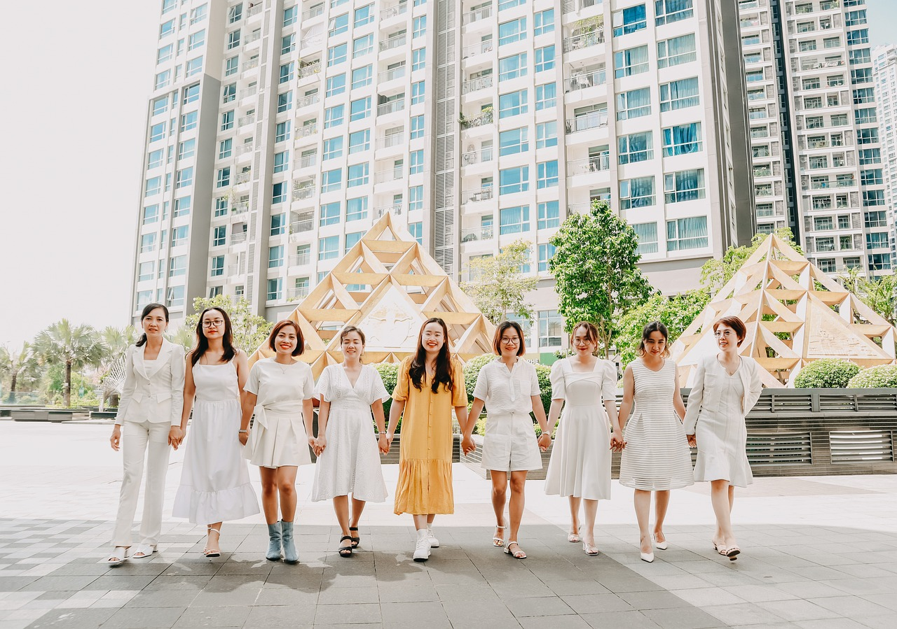
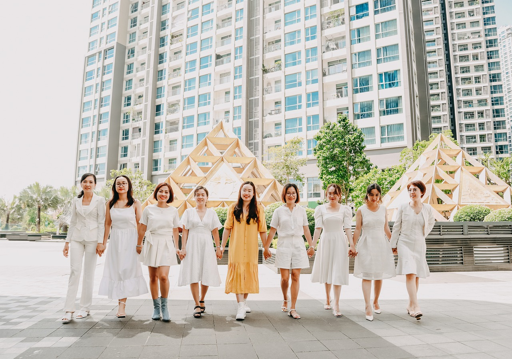

Types of Self-Help Groups
Mental Health
Support for managing mental health issues and promoting well-being.

Addiction Recovery
Groups dedicated to overcoming addiction and maintaining sobriety.
 Grief Counseling
Support for individuals coping with the loss of a loved one.


Personal Growth
Groups focused on self-improvement and personal development.

 
